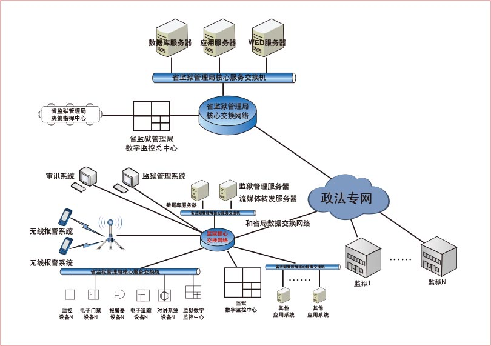

四川省监狱管理局承担全国监狱信息化工程(一期)应用系统生活卫生管理子系统的组织开发工作，现生活卫生管理子系统已经由北京环亚信通信息科技有限公司开发完成，急需在省局和全省36个监狱进行部署，为此，需要监狱管理局和36个监狱准备硬件系统和应用软件的部署环境。根据四川省监狱管理局和36个监狱的实际情况，分别从应用支撑系统、数据库、网络系统、安全系统、服务器及存储系统和终端系统和视频会议系统等作手进行系统建设，从而使整套系统的功能顺利实现。
通过建设监狱信息化一期工程项目，进一步完善监狱安全保障机制、罪犯改造机制和狱务公开机制，进一步提升监狱管理和执法水平，提高罪犯教育改造质量，为维护社会安全稳定服务；坚持把维护监狱的安全稳定放在首位，实现无脱逃、无重大狱内案件、无重大疫情、无重特大安全事故；以提高改造质量为中心，努力实现罪犯改好率达到90%以上；实现100%的执法依据、执法程序和执法结果公开透明。
依托国家电子政务外网和四川省政法专网，实现司法部，四川省监狱管理局及所辖监狱的网络连接；完善四川省监狱管理局及所辖监狱的局域网；在司法部、四川及其他省监狱管理机关及所辖监狱的建设预案管理、应急指挥联动、目标跟踪地理信息、警务人事等监管安全等应用系统；建设狱政管理、刑罚执行、罪犯教育与改造、生活卫生、综合治理协同等罪犯管理应用系统；建设罪犯信息查询、门户网站等狱务公开应用系统；与司法部建设同步，在四川省监狱管理局及所辖监狱建设监狱罪犯信息库和监狱警察信息库；配合司法部制定全国监狱信息化相关标准；建设相应的安全保障系统和相关的配套环境。
应用服务器层主要负责业务逻辑处理，用户请求的连接处理和数据库端或其他应用系统的连接处理，以及业务处理过程实现。本项目服务器设计将建立多机集群环境。本次的应用服务器采用中档服务器联想ThinkServer RD330服务器，是一款性价比极高的两路1U机架式服务器。
数据库服务平台主要采用动态分区、多机集群、并行数据库等技术，实现多台数据库主机同时并行访问数据库，应用可以根据需求均衡到不同主机资源上同时工作，多机互为备份。这种机制依靠系统提供的系统硬件、操作系统集群软件、与数据库提供的并行技术来满足要求。同时，与数据库服务平台相配合，采用专用数据采集处理服务器，负责数据采集工作，各数据库的数据采取分别汇集，单点入库的数据更新策略。在省局采用联想R680 G7四路服务器，在基层监狱采用联想ThinkServer RD630两路2U服务器。
安全管理服务器则主要采用机塔互换式联想ThinkServer TS430服务器。
四川省共有监狱36所，本期在每个监狱新增2台服务器 (内网，外网各1台) 作为数据库服务器，3台服务器作为应用服务器并配置相应的磁盘整列和光纤交换机，配置2台服务器作为安全管理服务器。
建立了四川省监狱管理局信息化一期建设项目应急指挥视频会议系统，实现了数据安全备份。并为各级监狱系统初步建立了人员信息库，确保各类信息的实施查询与全程掌握，为下一步建立安防视频监控系统打下基础。
未来比较方便的实现存储系统的扩容与数据重构。